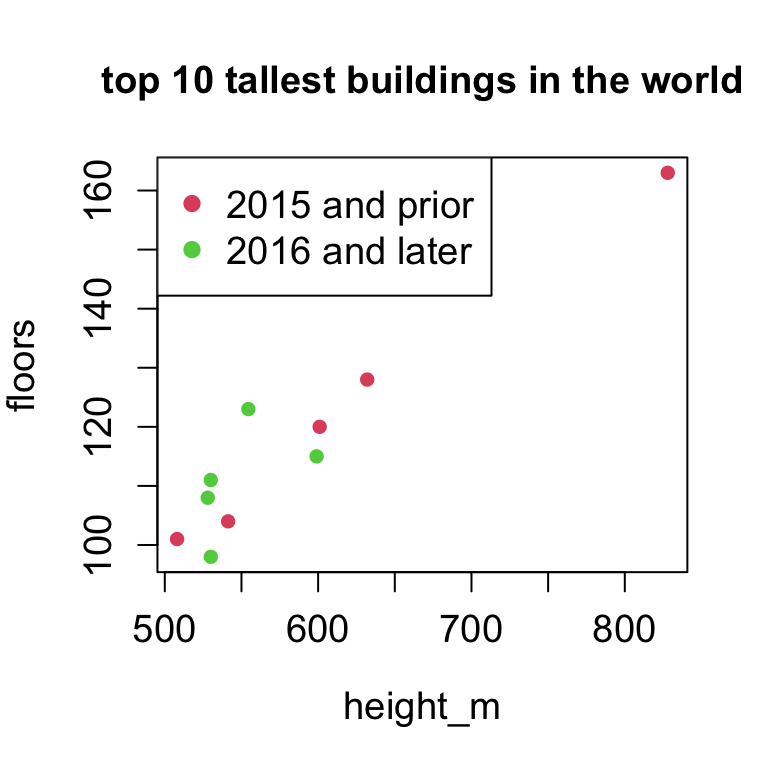

Go to https://posit.cloud/ (you can log in with your Drew account). We’ll first use this online platform to demonstrate RStudio; later we’ll download R and RStudio on your computer.
To start a new script, do File - New File - R Script. Do NOT choose “new project.”
Default layout of RStudio:
RStudio is an Integrated development environment (IDE) for R. You need to download BOTH R and RStudio for RStudio to work.
Running code directly in the console (1% of time):
Instead (99% of time):
To run code in the console, you just need to hit enter; when you are writing code in the script, hitting enter will go to the next line but will not run the code.
To run code from R script:
To do \(\sqrt{100}\) and \(e^2\):
To do \(\ln{(1000)}\) (log base e is the default, can change the base using log(1000, base=10))
Exercise: calculate the following in R
Use # to comment out text
Space and empty lines do not matter in R
R is case sensitive!
The ability to develop and use R packages is a big advantage of R over other commercial statistical software like SPSS or excel.
Before you can use a package, there are two steps:
install.packages()library() (recommended)The Lock5Data package contains dataset from Lock, Lock, Lock, Lock, and Lock textbook Statistics: Unlocking the Power of Data. Other formats of the dataset can be downloaded from http://www.lock5stat.com/datapage3e.html.
The tidyverse is a collection of very popular and powerful packages for data manipulation, visualization, formatting, etc. Details can be found at https://www.tidyverse.org/packages/. We’ll talk more about these packages later.
Examples of R object: a number, a vector, a data frame, a function, etc.
To assign a number to an R object called “a”:
Cereal$Name is a vector of 30 valuesc( , ) for combined valuesvector1 ± vector2, R will do the arithmetic operation element by element
col="red"mycol=red \(\rightarrow\) Error: object ‘red’ not foundcats, that indicates if a student owns at least one cat or notQ: what will mean(cats) return?
Logical vectors are very useful for subsetting dataset. For example, to get all the names of students who own cats:
IMPORTANT: do not confuse == and =!
which( ) will return the index of TRUE values
c( , ) to combine vectors and/or a single elementThe function append is more general. Run ?append to get more information
Nothing is stored! Recall, to store, you have to assign the new vector to an R object. We’ll override the old vector to store the new vector:
Q: what will names[c(2,2,2,3)] return?
R returns elements corresponding to TRUE
Alternatively, you can use the which( ) function
Use the minus sign to delete the corresponding elements from a vector
[1] 1 2 3 4 5[1] 2 4 6 8[1] 0.00 0.25 0.50 0.75 1.00[1] 2 2 2 2 2 2height_m=c(828, 632, 601, 599, 554.5, 541.3, 530, 530, 528, 508)
height_f=height_m * 3.28
floors=c(163, 128, 120, 115, 123, 104, 111, 98, 108, 101)
year=c(2010, 2015, 2012, 2017, 2016, 2014, 2016, 2018, 2018, 2004)
year.ind=as.numeric(year>2015)
plot(height_m,floors,col=year.ind+2,main='top 10 tallest buildings in the world',
cex.lab=1.2,cex.axis=1.2,cex.main=1.2,pch=16)
legend('topleft',
col=c(2,3),
pch=c(16,16),
legend=c('2015 and prior', '2016 and later'),cex=1.2)